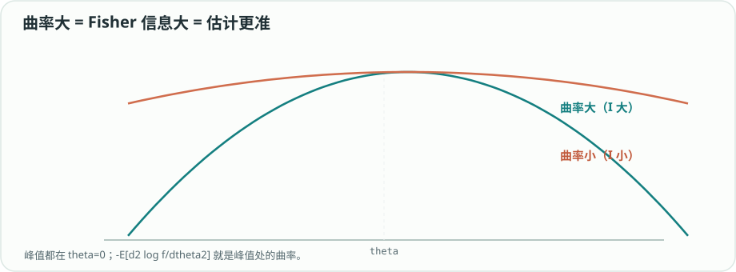
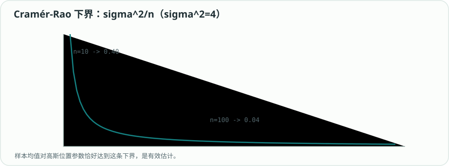
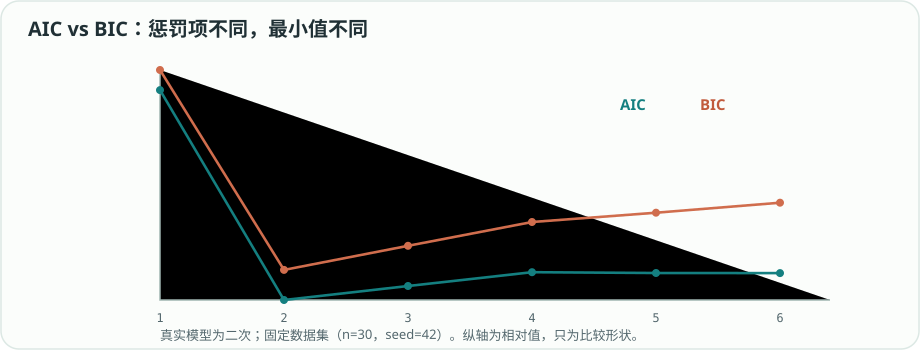

数据里到底有多少关于参数的信息？
统计推断问的是：给定观测数据，能多精确地估计未知参数 θ？信息论给了一个可计算的回答——用对数似然对 θ 的敏感度度量“数据里关于 θ 的信息量”，并推出无偏估计方差的下界。同一套思想还能回答“模型该多复杂”：把模型参数和解码看成都是要写入的比特，就得到 MDL 与 AIC/BIC。
Fisher 信息：对数似然的曲率
设分布族 f(x; θ) 满足正则条件（积分与微分可交换）。Fisher 信息定义为得分函数的二阶矩：
直观上，对数似然在 θ 处越“尖”，说明 θ 的微小改变会显著改变数据分布，于是你能把 θ 定得越准。它与 KL 散度有一个局部关系：当 δ→0 时，DKL(fθ‖fθ+δ)≈½·I(θ)·δ²。也就是说，Fisher 信息是 KL 散度在参数方向上的曲率（即统计流形上的度量）。

Cramér-Rao 界：无偏估计的方差下限
任何无偏估计器 θ̂ 的方差都不能低于 Fisher 信息的倒数：
它像香农式的“不可能性定理”：无论你用最大似然、矩估计还是贝叶斯，只要无偏，方差就下不去。以 n 个 i.i.d. N(μ, σ²) 样本估计 μ 为例，I(μ)=n/σ²，所以 Var(μ̂)≥σ²/n——样本均值恰好取等号，称为有效估计。

最小描述长度：奥卡姆剃刀的比特形式
模型选择可以写成编码问题：把模型参数和在该模型下编码数据所需的比特加起来，选总长度最小的模型：
和贝叶斯 MAP 对照一下就很清楚：L(M)=−log₂p(M)、L(D|M)=−log₂p(D|M)，所以 MDL 选出的正是使后验最大的模型。区别在于 MDL 不要求你真的给定先验概率——编码长度自然地把“复杂度”量化了出来。渐近上，MDL 与 BIC 等价。
Jaynes 最大熵方法
第 20 章我们见过：给定约束，微分熵最大的分布是“最没有偏见”的。Jaynes 把它提升为一个推断原则：在满足已知约束的所有分布中，选择熵最大的那个。理由是：熵更小的分布隐含地引入了你没有数据支持的前提。
例子：一个六面骰子，只知道平均点数是 4.5。在约束 E[X]=4.5、Σpᵢ=1 下最大化 H(X)=−Σpᵢlog₂pᵢ，用拉格朗日乘子得到 pᵢ ∝ λi（指数式偏斜），而不是均匀分布。
这就是统计力学的 Gibbs/Boltzmann 分布：给定平均能量约束时熵最大的分布。所以“温度为 β 的玻尔兹曼分布”和“约束下的最大熵分布”是同一件事——这不是类比，而是同一个变分问题。
AIC、BIC 与信息准则
模型选择用惩罚项平衡拟合度与复杂度：
| 准则 | 公式 | 来源 | 一致性 |
|---|---|---|---|
| AIC | −2 log L + 2k | KL 散度（Akaike 1973） | 不一致，倾向复杂模型 |
| BIC | −2 log L + k ln n | 贝叶斯渐近（Schwarz 1978） | 一致（n→∞ 选真模型） |
| MDL | −log L + (k/2) ln n + const | 编码长度（Rissanen） | 一致，渐近等价 BIC |

AIC 的目标是预测（最小化与真实分布的 KL 距离），BIC/MDL 的目标是识别真模型。这就是为什么同一个数据集上它们可能给出不同答案，而两者都没有错——它们在优化不同的目标。
把 Fisher 信息与准则写成可测试代码
本仓库的 Python 样例给出高斯位置参数的 Fisher 信息、Cramér-Rao 下界与 AIC/BIC，并用固定点断言。
from examples.foundations import (
fisher_info_gaussian, cramer_rao_bound, aic, bic)
assert fisher_info_gaussian(100, 2.0) == 25.0 # n/σ²
assert cramer_rao_bound(100, 2.0) == 0.04 # σ²/n
assert aic(-10.0, 3) == 26.0 # −2·logL+2k
assert round(bic(-10.0, 3, 100), 4) == 33.8155 # −2·logL+k·ln n高斯位置参数、已知 σ²=4；Fisher 信息 I(μ)=n/σ²，下界是其倒数。样本均值恰好取等号。
来源与延伸阅读
- Cover & Thomas, Elements of Information Theory：Fisher 信息、Cramér-Rao 界与最大熵方法的背景。
- H. Akaike (1973), Information Theory and an Extension of the Maximum Likelihood Principle：AIC 的原始论文。
- G. Schwarz (1978), Estimating the Dimension of a Model, Annals of Statistics 6(2)：BIC 的原始论文。
- J. Rissanen (1978), Modeling by Shortest Data Description：MDL 原理。
- MIT 6.441 (2016) Fisher Information and Estimation：Fisher 信息与 Cramér-Rao 界的课程推导。